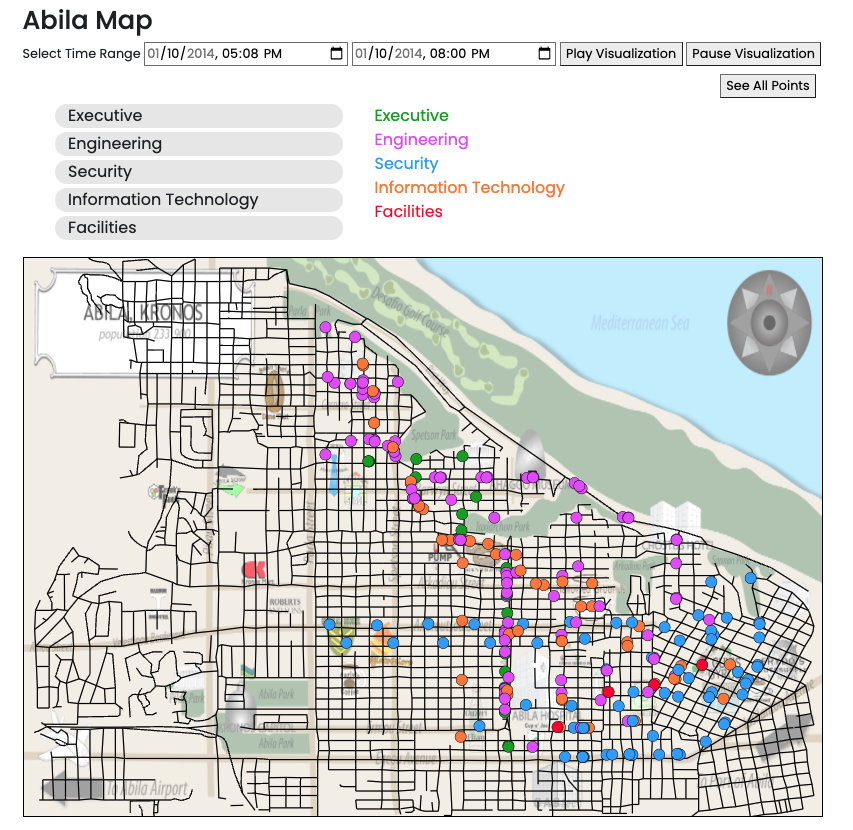
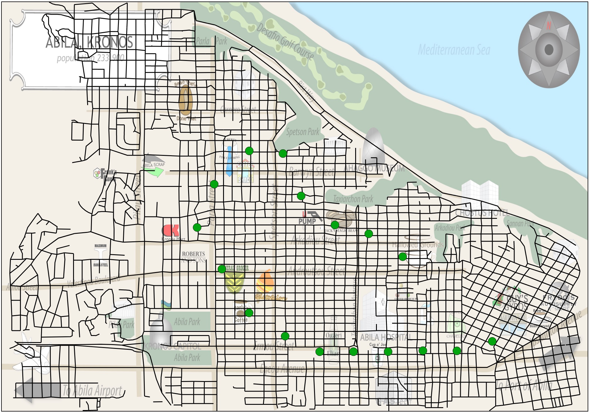

Security out driving late at night, anywhere from 11PM to 3AM.
Additional details
Suspicious members of security (from A1) are meeting in an unnamed location around
Frydos Autosupply n' More.
People
Meetings include but are not limited to being between:
Loreto Bodrogi
Minke Mies
Isia Vann
Hennie Osvaldo
Locations
An undisclosed area between Guy's Gyros and Frydos Autosupply n' More.
Times
From 11PM to 3PM on 1/6, 1/7, 1/9, 1/11, 1/13
Significance
All of the people involved in this pattern were previously suspect for POK involvement. It's possible that this area next to Guy's Gyros and Frydos Autosupply is a meeting area for POK members — both within GasTech and outside of GasTech.
Confidence level
10/10: this is consistent behavior over multiple days. Not many other people with GPS data travel as far as Frydos. Additionally, all people involved were labeled suspicious in A1 for reasons including but not limited to the following:
A1 data
Isia Vann:
The brother of Juliana Vann. Additionally, also related to Mandor Vann, a prominent POK member. Also plainly stated as an active POK member.
Hennie Osvaldo:
Recipient of an email titled "FW: ARISE - Inspiration for Defenders of Kronos." Potential relation to Carmine Osvaldo, a founding member of the POK.
Minke Mies:
Recipient of an email titled "FW: ARISE - Inspiration for Defenders of Kronos." Potential relation to Valentine Mies, a founding member of the POK.
Loreto Bodrogi:
Recipient of an email titled "FW: ARISE - Inspiration for Defenders of Kronos." Potential relation to Henk Bodrogi, a founding member and the original leader of the POK.
2.
Lucas Alcazar spent $10,000 at Frydos Autosupply n' More.
Additional details
Looking at Lucas's other purchases, he typically spends at most $200-$300 dollars; $10,000 is an anomaly.
Lucas isn't actually at Frydos when this credit card transaction goes through. He is at Ouzeri Elian, where Loreto Bodrogi is also located. Everyone at Frydos is majority security.
10 minutes after the $10,000 purchase, Lucas uses his credit card at Ouzeri Elian. Loreto Bodrogi leaves Ouzeri after the Ouzeri purchase was made.
People
Security employees
Loreto Bodrogi
Lucas Alcazar
Locations
Ouzeri Elian and Frydos Autosupply n' More.
Times
The $10,000 Frydos purchase occured on 1/13 at 7:20PM. The Ouzeri purchase made was on 1/13 at 7:30PM.
Significance
There are two possibilities:
1) Lucas is unaware of his credit card information being used elsewhere. Loreto is at the bar with Lucas to distract him until the $10,000 transaction went through.
2) Lucas is aware of his credit card information being used elsewhere. Loreto and Lucas arrived to the bar around the same time (6:46PM). It's possible that either Loreto or Lucas carpooled with someone else to go Frydos and make the purchase before coming back to the bar and leaving soon after.
Confidence level
8/10: While we are not sure what Lucas's involvement with the POK is, we are rather certain that there is something fishy behind this purchase; it was such an out-of-norm purchase for Lucas, and he wasn't at the location at that time.
A1 data
Loreto Bodrogi:
Please see (1) A1 data.
3.
Lucas Alcazar driving around the GasTech/Hospital area late at night/midnight.
Additional details
At times, the days that Lucas is at the office between 10PM and 1AM, he is out at the same time as suspicious security members (see (1))
People
Lucas Alcazar
Locations
The Hospital and GasTech
Times
1/7 7:20PM
1/16 12:04PM
1/18 10:00PM
Significance
There are two possibilities:
1) Lucas is visiting someone in the hospital on a semi-regular basis. We know from previous articles that GasTech pollution could cause hospitalization. This could be an indicator that he is working with the POK against GasTech.
2) Lucas is in late at night more often than his coworkers — this raises the question of why he is there so late and what he could potentially access when alone in the building. It's possible he was working overtime.
Confidence level
7/10: While we are not sure what Lucas's intentions are or where he is specifically traveling to, we are rather certain that there is something fishy behind this behavior. Given that no one else is working overtime, it would be strange that only he is working late.
4.
Security does not attend a seemingly otherwise company-wide gathering.
Additional details
Almost everyone in Engineering and IT goes towards a location on Friday night the 10th. This is most likely a party. Only Security employees do not go to this party.

People
Almost everyone, specifically Engineering
Locations
Someone's home (an unnamed house) on Carnero Street.
Times
1/10 5-8PM
Significance
Security could be taking advantage of the fact that everyone is busy doing other things to meet about POK activity.
Security seems to mainly be leaving from the Frydos area discussed in (1), which further reinforces the theory that there is a meeting spot in that area.
Confidence level
9/10: There is a clear distinction in map concentration for each employment type.
5.
The lone facility employee with GPS data, Bertrand Ovan, drove in a large circle late at night.
Additional details
Outside of this event, Betrand does not have such a clear and widespread path. He usually stays in the bottom right hand corner of the map only.

People
Bertrand Ovan
Locations
A huge circle going clockwise as shown in the image above.
Times
1/11 10PM-2AM
Significance
This behavior is different from other nights. In emails, he emphasizes being careful when driving, but driving this late seems to conflict with his overly-cautious attitude.
It's possible that he knows something about the kidnapping (not necessarily that he is a part of it), as he took an unexpected route that could have thrown POK members off guard.
Confidence level
4/10: There is a clear shift in schedule, but it's unclear what for.